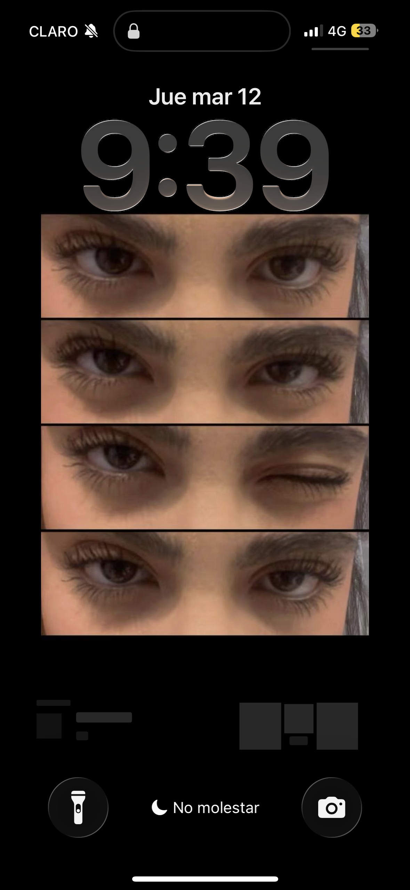

"Un mes desde que me dijiste que sí, y una eternidad de ganas de seguir haciéndote feliz"

El primer detalle
Aquel 11 de marzo, cuando duré días haciendo esto, solo tenía una misión en mi cabeza: quería verte sonreír. Fue mi primer intento, con peluchitos y todo, y aunque no era perfecto, iba cargado con la ilusión inmensa de alguien que ya empezaba a enamorarse de ti.
“Desde el día uno, todo lo que hago lleva tu nombre.”

Cumpliendotw tus sueños
Me contaste de tu sueño de tener una flor eterna, y para mí fue un honor ser quien te lo cumpliera. Poco sabía yo que meses después, serías tú quien me cumpliría el sueño más grande de todos: decirme que querías ser mi novia.

La primera carta que recibo
Fue la primera carta que alguien me daba en la vida. Qué valiente fuiste al dar ese primer paso y confesar lo que sentías. Ese 14 de febrero marcó mi alma porque supe, leyendo tus palabras, que tenía frente a mí a la mujer de mi vida.
“Ese día descubrí lo hermoso que se siente que te quieran de verdad.”

Rosas por monita
No era nuestro aniversario, ni tu cumpleaños, simplemente quería verte feliz. Me encanta llenarte de detalles porque quiero que todos los días de tu vida recuerdes que para mí, eres la mujer más espectacular del universo.

Aprendiendo de ti
Cuando me contaste que los lirios eran tus favoritos, me propuse encontrarlos como fuera. Aunque solo encontré blancos esa vez, fue mi manera de decirte que quiero aprenderme cada pequeño detalle de lo que te hace feliz.

Joan sebastian 25 rosas las horas qque a diario pienso en ti
Ese sábado después de salir, lo tuve clarísimo. Te envié 25 rosas como en la canción de Joan Sebastian, con una sola intención: hacerte saber que yo no venía de paso. Yo vine a quedarme y a ser el último de todos tus amores.
“Mientras más te conocía... más imposible me parecía imaginar mi vida sin ti.”

enamorandote desde la primera salida
Mis intenciones siempre fueron serias contigo. Desde la primera salida quise demostrártelo, aunque me daba miedo parecer muy intenso. Pero cuando estás seguro de algo, simplemente no puedes ocultarlo.

Mis ojos favoritos
Hiciste ese trend de TikTok y me di cuenta (otra vez) de que tienes los ojos más hermosos que he visto en mi vida. A ti te dio pena que lo subiera, pero yo estaba demasiado orgulloso de presumirte al mundo.

Flores amarillas
Aún éramos "casi algo", pero yo ya me sentía el hombre más afortunado cuidándote. No podía dejar que pasara ese día sin darte tus flores, porque tú ya iluminabas mis días mucho más que el sol.

El PowerPoint mas increible
Tú sabes que yo odio leer, pero esas diapositivas que me mandaste me las sé de memoria. Leer lo que sentías por mí me llenó el pecho de un orgullo gigante. Eres la mujer más tierna y detallista que existe.

Los nervios del anillo
Aquí estaba yo, midiéndome el anillo y mostrándoselo a mis amigos. Parecía un niño chiquito de la emoción que tenía de ir a pedirte que fueras mi novia oficialmente. Tenía el corazón a mil por hora.

La carta quemada
Quemé como tres hojas intentando hacerte algo estilo vintage. Olía a humo por todos lados, pero valió cada segundo de esfuerzo. Quería que la forma en que te pedía ser mi novia fuera tan especial como tú lo eres para mí.

El mejor "Sí" de mi vida
Las copas de vino, el letrero, la música, la peli del libro de la vida y tú. Hace exactamente un mes empezamos a escribir esta historia con título oficial. Ha sido el mes más bonito y lleno de amor que he vivido, y te volvería a preguntar lo mismo mil veces más.

Mi obra de arte
Este flyer resume perfectamente mi estado actual: completo, loco y perdidamente enamorado de ti. Me encanta poder presumir a todo el mundo que la mujer más increíble me escogió a mí.

nuestro futuro
Tú salvando vidas como la mejor doctora, y yo construyendo cosas como ingeniero. Nuestros sueños individuales se han convertido en un sueño compartido. Somos el mejor equipo, amor.
“No solo soñé con mi futuro soñé con tenerte a ti en él.”
“30 días de magia, más de 20 salidas, abrazos infinitos y un amor que no para de crecer.”
Hacernos cosquillas, ir al cine, saltar en los trampolines, las llamadas por las noches, los nervios que aún siento cuando te veo llegar Cada pequeño momento de este mes ha valido oro.
Gracias por ser mi lugar de paz, mi mejor amiga, mi novia y la dueña de mis sonrisas. Me enamoré de todo contigo, de lo simple y de lo extraordinario que es tenerte de la mano.
nuestro primer mes, y por todos los años que nos faltan.

Feliz Aniversario,
mi amor
Gracias por los 30 días más increíbles de mi vida.
Este es solo el primer capítulo de nuestra gran historia.
Te elegí hace un mes, y prometo seguir eligiéndote y cuidándote todos los días que me quedan de vida, Te amo inmensamente.